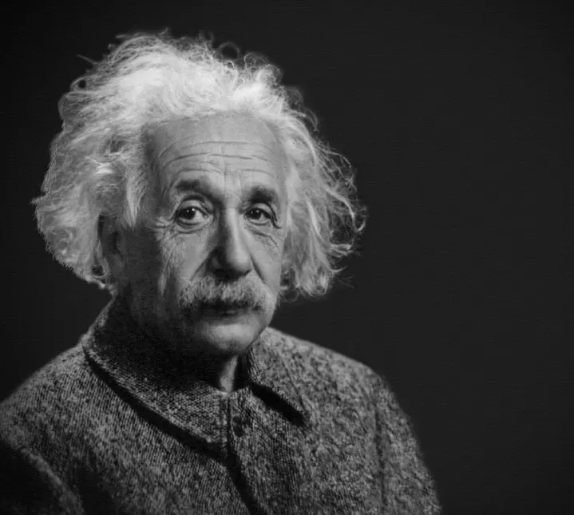
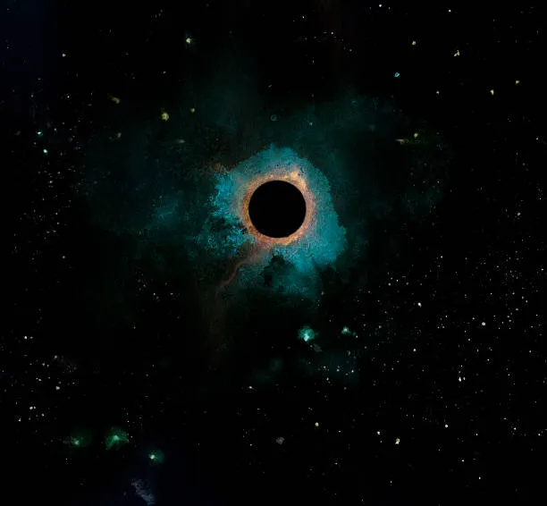

Curiosidades
DESDE PARTICULAS HASTA GALAXIAS
El Principio de Entropía: ¿Por qué todo tiende al caos?
Seguramente has notado que mantener tu habitación limpia requiere un esfuerzo enorme, pero que se desordene ocurre casi por arte de magia. No es mala suerte, es física pura.
¿Qué es la entropía?
En términos sencillos, la entropía es una medida del desorden o de la aleatoriedad en un sistema. La Segunda Ley de la Termodinámica nos dice que, en un sistema cerrado, la entropía siempre tiende a aumentar.

En resumen: al universo le "gusta" el desorden porque hay muchísimas más formas de que algo esté desordenado que de que esté perfectamente organizado.
Algunos ejemplos:
- El huevo roto: Es muy fácil romper un huevo y que la clara y la yema se mezclen (alta entropía). Pero, por más que batas, nunca verás que el huevo se "des-rompa".
- El café con leche: Cuando viertes leche en tu café, se mezclan solas. El sistema pasa de estar "separado" a "mezclado".
- Tu escritorio: Si dejas de ordenar tus papeles, con el tiempo terminarán mezclados. El caos es el estado natural.
La Relatividad: El tiempo es flexible
Albert Einstein nos enseñó que el tiempo no transcurre igual para todos. Depende de qué tan rápido te muevas o de qué tan cerca estés de un objeto con mucha gravedad.
¿Qué es la dilatación temporal?
Es un fenómeno físico donde el tiempo transcurre más lentamente para un objeto en movimiento que para uno en reposo. A velocidades cercanas a la de la luz, los segundos se estiran de forma sorprendente.

En resumen: El tiempo no es un reloj universal e inmutable, sino una dimensión que se estira y encoge según la velocidad y la masa.
Datos fascinantes:
- Satélites GPS: Sus relojes corren unos microsegundos más rápido que los de la Tierra. Si no se ajustaran por la relatividad, Google Maps fallaría por kilómetros.
- La paradoja de los gemelos: Si un gemelo viajara al espacio a gran velocidad y regresara, sería más joven que el gemelo que se quedó en la Tierra.
- Cerca de un Agujero Negro: La gravedad es tan intensa que el tiempo se ralentiza drásticamente. Lo que para ti son minutos, fuera podrían ser años.
Materia Oscura: El pegamento invisible
Todo lo que vemos —estrellas, planetas, personas— representa solo el 5% del universo. El resto es un misterio total que llamamos materia y energía oscura.
¿Cómo sabemos que existe?
Aunque no podemos verla porque no emite luz, vemos su efecto gravitatorio. Sin la materia oscura, las galaxias girarían tan rápido que sus estrellas saldrían disparadas como gotas de agua en un paraguas que gira.

En resumen: Vivimos en un universo donde la mayor parte de lo que "mueve los hilos" es completamente invisible para nuestros sentidos y telescopios.
Puntos clave:
- Masa fantasma: Las galaxias tienen mucha más gravedad de la que su luz sugiere. Hay "algo" más allí que pesa pero no brilla.
- Estructura cósmica: La materia oscura actúa como un andamio invisible sobre el cual se formaron las galaxias que vemos hoy.
- Un gran enigma: A pesar de décadas de estudio, todavía no sabemos de qué partícula está hecha la materia oscura.
Tendencias
-
#RelatividadExtrema: ¿Es el tiempo una ilusión? El debate entre físicos y filósofos sobre la "inexistencia" del flujo temporal.
-
#AgujerosDeGusano: Nuevos modelos cuánticos sugieren que podrían conectar el pasado con el futuro y resolver la paradoja de Hawking.
-
#ComputaciónCuántica: El salto a la "tolerancia a fallos" y el uso de iones atrapados para simulaciones químicas complejas.
-
#MateriaOscura: Detectores de grafeno logran captar interacciones de partículas fantasmales por primera vez en años.
-
#MultiversoFísico: La huella fósil en los datos cosmológicos que podría demostrar la existencia de leyes físicas alternativas.
La física de vanguardia este año se centra en unir la gravedad con el colapso cuántico, desafiando nuestra percepción de la realidad cotidiana.